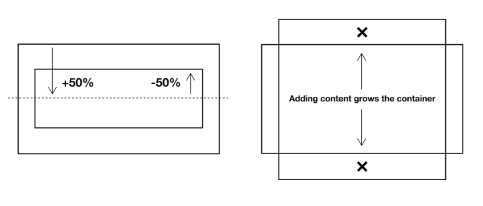
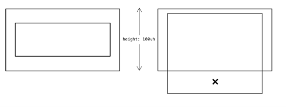
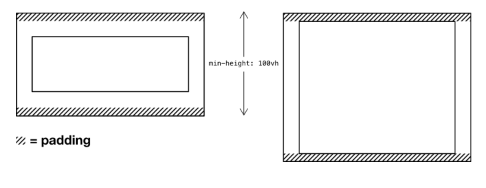
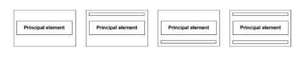
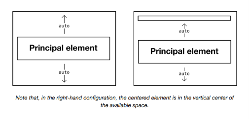
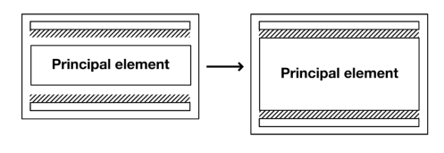

The Cover¶
El problema¶
Durante años, hubo consternación sobre lo difícil que era centrar algo horizontal y verticalmente con CSS. Fue utilizado por los detractores de CSS como una especie de "prueba" ejemplar de sus deficiencias.
La verdad es que hay numerosas formas de centrar contenido con CSS. Sin embargo, solo hay ciertas maneras de hacerlo sin temor a desbordamientos, superposiciones u otras roturas. Por ejemplo, podríamos usar position: relative y transform para centrar verticalmente un elemento dentro de un padre:
Lo bueno de esto es la parte transform: translateY(-50%), que compensa la altura del elemento en sí mismo — sin importar cuál sea esa altura. Lo menos bueno es el desbordamiento superior e inferior que se produce cuando el contenido del elemento hijo lo hace más alto que el padre. No hemos, hasta ahora, diseñado el layout para tolerar contenido dinámico.

Quizás el método más robusto es combinar justify-content: center (horizontal) y align-items: center (vertical) de Flexbox.
Explicacion
Este apartado de Every Layout no está diciendo que no se pueda centrar con CSS. Lo que está diciendo es algo más importante:
Centrar es fácil. Centrar de forma robusta, para contenido de tamaño desconocido, es lo difícil.
Veamos por partes.
El primer método: position + transform
Imagina que el padre mide 600px de alto.
¿Qué hace top: 50%?
Mueve el hijo 300px hacia abajo, porque el 50% se calcula sobre la altura del padre.
Si el hijo mide 100px de alto:
Antes
┌──────────────────────────┐
│████████ │
│████████ │
└──────────────────────────┘
Después de top:50%
┌──────────────────────────┐
│ │
│ │
│ │
│████████ │
│████████ │
└──────────────────────────┘
Pero ahora el elemento no está centrado.
¿Por qué?
Porque lo que quedó en el centro fue su borde superior, no el centro del elemento.
Entonces aparece translateY(-50%)
Aquí ocurre algo muy importante.
Ese 50% ya no se calcula respecto al padre.
Se calcula respecto al propio elemento.
Si el hijo mide 100px:
significa
porque es la mitad de su propia altura.
Entonces ocurre esto:
Ahora sí queda exactamente en el centro.
¿Por qué dicen que esto tiene un problema?
Porque funciona mientras el contenido tenga un tamaño razonable.
Supongamos esto.
Padre:
Hijo:
Todo perfecto.
Pero mañana el contenido cambia.
Ahora el hijo mide
porque agregaste mucho texto.
Entonces sucede esto:
┌──────────────────────┐
│██████████████████████│ ← se sale arriba
│██████████████████████│
│██████████████████████│
│██████████████████████│
│██████████████████████│
│██████████████████████│
│██████████████████████│
│██████████████████████│ ← también se sale abajo
└──────────────────────┘
Como el centro del elemento debe coincidir con el centro del padre, el elemento empieza a sobresalir por arriba y por abajo.
Ese es el desbordamiento del que habla el libro.
No está preparado para contenido dinámico.
Ahora Flexbox
Aquí ya no estamos moviendo manualmente el elemento.
Le estamos diciendo al navegador:
"Coloca este elemento en el centro."
El navegador hace todos los cálculos.
justify-content
En un flex-direction: row (el valor por defecto):
Controla el eje horizontal.
align-items
Controla el eje vertical.
Los dos juntos
Resultado:
Todo queda perfectamente centrado.
¿Por qué es más robusto?
Porque no depende de:
- cuánto mide el hijo;
- hacer cálculos manuales;
- usar
top; - usar
transform; - conocer la altura del contenido.
Si el contenido cambia de tamaño, Flexbox vuelve a calcular automáticamente la distribución.
Por ejemplo:
Elemento pequeño:
Elemento grande:
Ambos siguen centrados sin cambiar una sola línea de CSS.
Entonces, ¿por qué Every Layout dice que el primer método no es robusto?
Porque el diseño moderno debe asumir que el contenido puede cambiar:
- el texto puede traducirse a otro idioma y ocupar más espacio;
- un usuario puede aumentar el tamaño de la fuente;
- puede aparecer una imagen más grande;
- puede agregarse más contenido desde una base de datos.
Un buen layout no debería romperse cuando eso ocurre.
Por eso, en diseño moderno se prefieren herramientas como Flexbox (y también Grid) para centrar elementos. No solo centran, sino que se adaptan mucho mejor al contenido dinámico, reduciendo el riesgo de desbordamientos y otros problemas de mantenimiento.
Manejo adecuado de la altura¶
Solo aplicar el CSS de Flexbox no tendrá, por sí solo, un efecto visible en el centrado vertical porque, por defecto, la altura del elemento .centered está determinada por la altura de su contenido (implícitamente, height: auto). Esto es algo a veces referido como intrinsic sizing, y se cubre con más detalle en la documentación del layout Sidebar.
Establecer una altura fija — como en el ejemplo poco confiable de transform anterior — sería imprudente: no sabemos de antemano cuánto contenido habrá, o cuánto espacio vertical ocupará. En otras palabras, no hay nada que impida que ocurra un desbordamiento.

En su lugar, podemos establecer un min-height. De esta manera, el elemento se expandirá verticalmente para acomodar el contenido, donde sea que la altura natural (auto) sea mayor que el min-height. Cuando esto sucede, la provisión de algo de padding vertical asegura que el contenido centrado no llegue a los bordes.

Explicacion
Esta es una de las ideas más importantes de Every Layout: no diseñes para el contenido que tienes hoy, diseña para el contenido que podría existir mañana.
Vamos paso por paso.
El problema de height
Supongamos que haces un contenedor centrado así:
Todo parece perfecto.
Pero imagina que después el contenido cambia.
En lugar de una palabra ahora tienes un formulario enorme.
Ahora ese formulario mide más que la pantalla.
¿Qué ocurre con height?
Si el contenedor tiene exactamente
su altura nunca puede crecer.
Siempre será igual al alto de la ventana.
Por ejemplo:
Aunque el contenido necesite 1200px.
Entonces sucede esto:
┌──────────────────────────────┐
│ │
│ Formulario │
│ │
│ │
│ │
│------------------------------│
│ resto del formulario │ ← ya no cabe
│ queda fuera │
└──────────────────────────────┘
Ahí aparece el desbordamiento (overflow).
Entonces aparece min-height
En lugar de decir
decimos
La palabra min significa:
"Como mínimo quiero esta altura, pero si necesitas más, puedes crecer."
Es decir,
Altura mínima = 700px
Si el contenido necesita 700px
→ mide 700px
Si necesita 900px
→ mide 900px
Si necesita 1500px
→ mide 1500px
Ya no está bloqueado.
Visualmente
Con height
┌──────────────┐
│ │
│██████████████│
│██████████████│
│██████████████│
└──────────────┘
▲
no puede crecer
Con min-height
┌──────────────┐
│ │
│██████████████│
│██████████████│
│██████████████│
│██████████████│
│██████████████│
│██████████████│
└──────────────┘
Simplemente aumenta su tamaño.
¿Qué tiene que ver el "intrinsic sizing"?
Aquí aparece un concepto muy importante.
Los elementos HTML tienen por defecto
Eso significa:
"Mi altura será la necesaria para contener mi contenido."
Por ejemplo
La altura es pequeña.
Ahora:
La altura aumenta sola.
Eso es el comportamiento intrínseco (intrinsic sizing): el tamaño lo determina el contenido.
Every Layout intenta aprovechar este comportamiento natural en lugar de luchar contra él fijando alturas rígidas.
Entonces, ¿por qué no basta con Flexbox?
Si solo escribes
no ocurre ningún centrado vertical.
¿Por qué?
Porque el contenedor mide exactamente lo mismo que su hijo.
Imagina esto.
El padre tiene exactamente la altura del hijo.
No existe espacio libre arriba ni abajo.
Y align-items solo distribuye el espacio libre del eje transversal. Si ese espacio es 0, no hay nada que centrar.
Es como intentar poner un cuadro en el centro de una caja que tiene exactamente el mismo tamaño que el cuadro: ya está ocupando todo el espacio disponible.
¿Por qué recomiendan además padding?
Imagina que el contenido termina siendo muy alto.
Con solo
podría quedar pegado a los bordes.
┌───────────────────────┐
│███████████████████████│
│███████████████████████│
│███████████████████████│
│███████████████████████│
└───────────────────────┘
En cambio, si agregas
obtienes un margen interno arriba y abajo.
┌───────────────────────┐
│ │
│███████████████████████│
│███████████████████████│
│███████████████████████│
│ │
└───────────────────────┘
Así, cuando el contenido crezca y el contenedor se expanda, seguirá respirando y no quedará pegado a los bordes.
La idea principal de este apartado
El mensaje de Every Layout es:
- ❌ Evita
heightfija cuando el contenido puede variar. - ✅ Usa
min-heightpara establecer un tamaño mínimo sin impedir que el contenedor crezca. - ✅ Aprovecha el comportamiento intrínseco (
height: auto) para que el contenido determine el tamaño cuando sea necesario. - ✅ Añade
paddingpara mantener un espacio cómodo cuando el contenido haga crecer el contenedor.
Ese enfoque hace que el diseño sea mucho más resistente a cambios en el contenido, distintos tamaños de pantalla y ajustes de accesibilidad como aumentar el tamaño de la fuente.
Box sizing¶
Para asegurar que el elemento padre retenga una altura de 100vh, a pesar del padding adicional, se debe aplicar un valor de box-sizing: border-box. Donde no se aplica, el padding se agrega a la altura total.
El box-sizing: border-box es tan deseable, que usualmente se aplica a todos los elementos en un bloque de declaración global. El uso del selector universal (*) significa que todos los elementos se ven afectados.
Esto es perfectamente funcional donde solo un elemento centrado está en juego. Pero tenemos la costumbre de querer incluir otros elementos, arriba y abajo del centrado. Quizás es un botón de cerrar en la esquina superior derecha, o un indicador de "leer más" en la parte inferior central. En cualquier caso, necesito manejar estos casos de manera modular, y sin producir roturas.
Explicacion
Esta explicación es importante porque conecta dos conceptos: box-sizing y min-height: 100vh.
Hay una frase que puede pasar desapercibida:
"Para asegurar que el elemento padre retenga una altura de
100vh, a pesar del padding adicional..."
¿Por qué el padding afecta la altura? Veámoslo.
El modelo de caja (Box Model)
Todo elemento HTML está formado por cuatro partes:
┌─────────────────────────────┐
│ Margin │
│ ┌─────────────────────────┐ │
│ │ Border │ │
│ │ ┌─────────────────────┐ │ │
│ │ │ Padding │ │ │
│ │ │ ┌─────────────────┐ │ │ │
│ │ │ │ Content │ │ │ │
│ │ │ └─────────────────┘ │ │ │
│ │ └─────────────────────┘ │ │
│ └─────────────────────────┘ │
└─────────────────────────────┘
El problema está en cómo CSS calcula el tamaño.
Sin box-sizing
Por defecto, todos los navegadores usan:
Eso significa:
El
widthy elheightsolo corresponden al contenido.
Supongamos:
Imagina que el viewport mide 800 px.
Entonces ocurre esto.
Contenido:
Padding arriba:
Padding abajo:
La altura real será:
Visualmente:
Viewport (800px)
┌────────────────────────────┐
│ padding 20px │
│ │
│ │
│ contenido (800px) │
│ │
│ │
│ padding 20px │
└────────────────────────────┘
Altura total = 840px
Ahora el elemento ya no mide 100vh, sino más.
¿Qué problema produce?
Supongamos que el Cover debe ocupar exactamente la pantalla.
Pero como mide 840 px, aparece un pequeño scroll.
Ese scroll no lo querías.
Fue causado únicamente por el padding.
Con border-box
Ahora escribimos:
La regla cambia completamente.
Ahora CSS interpreta:
"Los 100vh incluyen el padding y el borde."
Entonces:
significa:
No 840.
El navegador hace las cuentas por ti.
Contenido:
Padding:
Total:
Visualmente:
┌──────────────────────────┐
│ padding │
│ │
│ contenido │
│ │
│ padding │
└──────────────────────────┘
Todo sigue midiendo 100vh.
¿Por qué lo ponen globalmente?
Muestran esto:
El selector universal
significa:
Todos los elementos.
Es decir,
todos tendrán
¿Por qué hacen eso?
Porque casi siempre es el comportamiento que realmente queremos.
Imagina un botón.
Con content-box
mide
Con border-box
mide
Esto hace muchísimo más fáciles los cálculos.
Por eso hoy en día prácticamente todos los frameworks (Bootstrap, Tailwind, Material UI, etc.) empiezan con algo parecido a:
¿Y por qué después vuelve a hablar de header y footer?
Fíjate que el párrafo cambia de tema.
Primero explica:
"Necesitamos
box-sizingpara que el padding no aumente el tamaño."
Y enseguida dice:
"Pero normalmente queremos añadir elementos arriba y abajo."
Es decir:
Primero resolvió el problema del tamaño.
Ahora empieza otro problema.
┌───────────────────────────┐
│ Header │
│ │
│ │
│ Contenido │
│ │
│ │
│ Footer │
└───────────────────────────┘
Ya no basta con centrar un único elemento.
Hay que mantener el centrado aunque aparezcan hermanos.
Ese es precisamente el problema que luego resuelve con:
Un detalle importante
En el texto hablan de height: 100vh, pero el Cover realmente utiliza:
Con min-height, box-sizing: border-box sigue siendo útil por la misma razón: garantiza que ese mínimo incluya el padding. Así, cuando el contenido es pequeño, el Cover ocupa exactamente el alto de la ventana sin crecer por culpa del padding. Y si el contenido necesita más espacio, el contenedor puede expandirse gracias a min-height, manteniendo el comportamiento flexible que busca Every Layout.
La solución¶
Lo que necesito es un componente de layout que pueda manejar contenido centrado verticalmente (bajo un min-height) y pueda acomodar elementos de top/header y bottom/footer. Para hacer el componente componible, también debería poder agregar y eliminar estos elementos en el HTML sin tener que adaptar el CSS. Debería ser modular y, por lo tanto, no una imposición de codificación para los editores de contenido.
El componente Cover es un contexto Flexbox con flex-direction: column. Esta declaración significa que los elementos hijos se colocan verticalmente en lugar de horizontalmente. En otras palabras, la 'dirección de flujo' del contexto de formato Flexbox se devuelve a la de un elemento block estándar.

El Cover tiene un elemento principal que siempre debe gravitar hacia el centro. Además, puede tener un elemento top/header y/o un elemento bottom/footer.
¿Cómo manejamos todos estos casos sin tener que adaptar el CSS? Primero, le damos al elemento centrado (h1 en el ejemplo, pero podría ser cualquier elemento) márgenes auto:
Estos empujan el elemento lejos de cualquier cosa arriba y abajo de él, moviéndolo al centro del espacio disponible. Críticamente, empujará contra el borde interior de un padre o el borde superior/inferior de un elemento hermano.

Nota que, en la configuración de la derecha, el elemento centrado está en el centro vertical del espacio disponible.
Todo lo que queda es asegurar que haya espacio entre los (hasta) tres elementos hijos donde el min-height no se haya excedido.

Actualmente, los márgenes simplemente se colapsan a nada. Dado que no podemos entrar en una función calc() para adaptar el margen auto (calc(auto + 1rem) es inválido), lo mejor que podemos hacer es agregar margin a los elementos header y footer contextualmente.
Nota el uso de la cascada, especificidad ↗ y la negación :not() para apuntar a los elementos correctos. Primero, aplicamos márgenes superior e inferior a todos los hijos, usando un selector universal de hijos. Luego sobrescribimos esto para el elemento a centrar (h1) para lograr los márgenes auto. Finalmente, usamos la función :not() para eliminar el margen extraño de los elementos superior e inferior si no son el elemento centrado. Si hay un elemento centrado y un footer, pero no hay header, el elemento centrado será el :first-child y debe retener margin-top: auto.
Explicacion
Este es probablemente uno de los layouts más ingeniosos de Every Layout. La idea no es simplemente "centrar un elemento", sino crear un componente que funcione correctamente sin importar qué elementos existan.
Veámoslo paso a paso.
¿Qué problema intenta resolver?
Imagina una página como esta:
+-------------------------+
| Header |
| |
| |
| Contenido |
| |
| |
| Footer |
+-------------------------+
Pero otras veces podrías tener:
O:
O:
El CSS debería funcionar para las cuatro situaciones, sin cambiar una sola línea.
Ese es el objetivo del Cover.
Primer paso
¿Por qué column?
Porque ahora el eje principal es vertical.
Normalmente Flexbox organiza así:
Con column pasa a ser
Es decir, los hijos se apilan uno debajo del otro.
Ahora aparece el truco
Supongamos que tenemos
y al h1 le ponen
Aquí ocurre la magia.
¿Qué hace margin:auto en Flexbox?
Muchísima gente cree que margin:auto solo sirve para centrar horizontalmente.
En Flexbox hace mucho más.
Un margen auto significa:
"Absorbe todo el espacio libre que puedas."
Imagina que el contenedor mide
Y los elementos ocupan
Total:
Quedan libres
Como el h1 tiene
los 500 px libres se reparten entre ambos márgenes.
Resultado:
El título queda exactamente en el centro del espacio disponible.
¿Y si no hay footer?
Tenemos
El espacio libre ahora es
El margen inferior empuja contra el borde del padre.
Sigue funcionando.
¿Y si no hay header?
Ahora sucede
Otra vez funciona.
¿Y si solo existe el contenido?
Entonces
También funciona.
Por eso dicen que es componible.
El CSS no necesita saber qué hijos existen.
¿Por qué agregan márgenes a todos?
Luego escriben
¿Por qué?
Porque cuando NO sobra espacio, los auto dejan de actuar.
Imagina
Si el contenido llena casi todo el contenedor, los márgenes auto prácticamente valen 0.
Entonces todo queda pegado.
Sin separación.
Con
obtienes
Siempre existe un pequeño espacio.
Entonces... ¿por qué vuelven a escribir el CSS del h1?
Porque sobrescribe el margen anterior.
La cascada funciona así:
Primero
Luego
Como el segundo selector es más específico y aparece después, gana.
El h1 termina con:
Mientras que el header y footer conservan:
¿Y para qué sirven estos selectores?
y
Veamos un ejemplo.
Supón que existe
El header es el primer hijo.
Tiene
Eso produce un espacio arriba.
Pero ese espacio no aporta nada: el header ya está pegado al borde superior del contenedor.
Por eso eliminan ese margen.
Lo mismo ocurre con el footer:
No hace falta dejar un margen debajo del último elemento.
¿Por qué usan :not(h1)?
Porque puede ocurrir esto:
Aquí el h1 es el primer hijo.
Si escribieran simplemente:
Le quitarían el
al elemento que precisamente debe centrarse.
Eso rompería el layout.
Con
están diciendo:
"Quita el margen superior al primer hijo... excepto si ese primer hijo es el elemento que debe quedar centrado."
Lo mismo aplica para :last-child:not(h1).
La idea clave del Cover
Este layout aprovecha una característica muy potente de Flexbox: los márgenes auto absorben el espacio libre. En lugar de calcular posiciones o depender de que existan un encabezado y un pie, deja que el navegador distribuya automáticamente ese espacio.
Por eso el Cover puede adaptarse a cualquiera de estas estructuras sin modificar el CSS:
- Solo contenido principal.
- Encabezado + contenido.
- Contenido + pie.
- Encabezado + contenido + pie.
Esa capacidad de funcionar correctamente aunque cambie la composición del HTML es precisamente lo que Every Layout llama un componente componible.
⚠ Shorthands¶
Nota cómo escribimos margin-top y margin-bottom por separado en el primer bloque de declaración, en lugar de usar el shorthand margin: 1rem 0. La razón es que este componente solo se preocupa por los márgenes verticales para lograr su layout. Al hacer los márgenes horizontales 0, podríamos estar deshaciendo indebidamente estilos aplicados o heredados por un componente ancestro.
Solo establece lo que necesitas establecer.
Ahora es seguro agregar espaciado alrededor del interior del contenedor usando padding. Ya sea que haya uno, dos o tres elementos presentes, el espaciado permanece simétrico y nuestro componente modular sin intervención de estilo.
El min-height está establecido a 100vh, de modo que el elemento cubre el 100% de la altura del viewport (de ahí el nombre). Sin embargo, no hay razón por la que el min-height no pueda establecerse a otro valor. 100vh se considera un sensible default, y es el valor por defecto para la prop minHeight en la implementación del componente personalizado a continuación.
Explicacion
Este apartado habla de dos ideas importantes de Every Layout:
- No modificar propiedades que no necesitas tocar.
- Hacer que el componente sea reutilizable y no interfiera con otros componentes.
Veámoslo.
¿Por qué no usan margin: 1rem 0?
Podrían escribir:
porque significa
Es exactamente igual que escribir:
Pero Every Layout dice que eso no es una buena práctica aquí.
¿Por qué?
Porque el componente solo necesita controlar el espacio vertical.
No le interesa el horizontal.
Entonces escribe únicamente:
y deja intactos:
Imagina este caso
Supón que tienes un componente padre.
Eso centra horizontalmente todos los hijos.
Ahora dentro colocas un Cover.
Si el Cover escribiera
estaría haciendo esto sin que te des cuenta:
Acabas de destruir el centrado horizontal que había definido el componente padre.
Visualmente:
Antes
Después
El Cover rompió otro componente.
En cambio
Si solamente hace
Los márgenes laterales siguen siendo los del padre.
Todo continúa funcionando.
Ese es el principio
Every Layout resume esta idea en una frase:
Solo establece lo que necesitas establecer.
Es una regla muy poderosa.
Un componente no debería modificar propiedades que no son de su responsabilidad.
Si el componente solo controla:
- distribución vertical,
- espacio vertical,
entonces no debería tocar:
- márgenes laterales,
- colores,
- fuentes,
- alineación horizontal,
- etc.
Ahora hablan del padding
Luego muestran
¿Por qué ahora sí es seguro poner padding?
Porque ya resolvieron el problema del centrado.
Antes tenían esto:
Si el contenido crece:
┌────────────────────────┐
│████████████████████████│
│████████████████████████│
│████████████████████████│
└────────────────────────┘
Queda pegado al borde.
Con
obtienes
┌────────────────────────┐
│ │
│ ████████████████████ │
│ ████████████████████ │
│ │
└────────────────────────┘
Siempre existe un espacio alrededor.
¿Por qué el padding no rompe el centrado?
Porque el área disponible para Flexbox pasa a ser el interior del padding.
Imagina:
┌────────────────────────────┐
│ padding │
│ ┌────────────────────────┐ │
│ │ │ │
│ │ Contenido │ │
│ │ │ │
│ └────────────────────────┘ │
│ padding │
└────────────────────────────┘
Flexbox centra dentro de esa zona interior.
Todo sigue siendo simétrico.
¿Por qué min-height:100vh?
Recuerda la diferencia.
No hacen
porque impediría crecer al contenedor.
Hacen
que significa
"Como mínimo ocupa toda la pantalla."
Si el contenido es pequeño:
Ocupa toda la pantalla.
Si el contenido aumenta:
Viewport
┌────────────────────┐
│ │
│Formulario │
│Formulario │
│Formulario │
│Formulario │
│Formulario │
│ │
└────────────────────┘
↓ sigue creciendo
La altura ya no es 100vh.
Ahora puede ser:
- 120vh
- 150vh
- 300vh
Lo que el contenido necesite.
¿Qué significa "sensible default"?
Cuando dicen:
"
100vhse considera un sensible default"
quieren decir:
Es un valor predeterminado razonable, pero no obligatorio.
En la mayoría de los casos, un Cover se usa para secciones que deben llenar al menos toda la ventana del navegador, por eso 100vh es una buena elección inicial.
Sin embargo, el componente sigue siendo flexible. Puedes cambiarlo si el contexto lo requiere:
o incluso:
El componente seguirá funcionando igual; simplemente cambiará el espacio mínimo que intenta cubrir.
La filosofía detrás de este apartado
Este fragmento refleja muy bien la filosofía de Every Layout:
- Haz que cada componente tenga una responsabilidad clara.
- No sobrescribas propiedades que no necesitas controlar.
- Usa valores predeterminados útiles, pero que puedan reemplazarse fácilmente.
- Permite que el contenido determine el tamaño cuando sea necesario, en lugar de imponer dimensiones rígidas.
Ese enfoque hace que los componentes sean más reutilizables y evita que interfieran entre sí cuando se combinan en una interfaz más grande.
Centrado horizontal¶
Hasta ahora no he abordado el centrado horizontal, y eso es bastante deliberado. Los componentes de layout deberían tratar de resolver solo un problema — y el problema del centrado modular es peculiar. El layout Center maneja el centrado horizontal y se puede usar en composición con el Cover. Podrías envolver el Cover en un Center o hacer que uno o más de sus hijos sean un Center. Todo se trata de composición.
Explicacion
Este párrafo resume una de las filosofías centrales de Every Layout: cada layout debe resolver un solo problema.
La frase clave es:
Los componentes de layout deberían tratar de resolver solo un problema.
Veamos por qué.
La tentación
Cuando construimos un componente, solemos pensar:
"Ya que estoy haciendo un
Cover, también voy a centrar horizontalmente."
Entonces escribiríamos algo así:
Parece una buena idea.
Pero Every Layout dice que no lo es.
¿Por qué?
Porque ahora el Cover está resolviendo dos problemas distintos.
- Centrar verticalmente.
- Centrar horizontalmente.
Y puede que tú no quieras ambas cosas.
Ejemplo
Imagina una página de inicio.
Quieres que todo esté centrado horizontalmente.
Perfecto.
Pero ahora imagina un formulario.
Verticalmente quieres que esté en el centro.
Horizontalmente no.
Los campos normalmente ocupan todo el ancho disponible.
Si el Cover también hiciera
obtendrías algo así:
Todo comprimido en el centro.
Probablemente no era lo que buscabas.
Entonces aparece otro layout: Center
Every Layout ya tiene un layout especializado para eso.
El Cover dice:
Yo solo centro verticalmente.
El Center dice:
Yo solo centro horizontalmente.
Cada uno tiene una única responsabilidad.
¿Cómo se combinan?
Supongamos que tienes
Visualmente:
Center
┌─────────────────────────┐
│ │
│ Cover │
│ ┌─────────────────┐ │
│ │ │ │
│ │ Contenido │ │
│ │ │ │
│ └─────────────────┘ │
│ │
└─────────────────────────┘
El Center controla el eje horizontal.
El Cover controla el eje vertical.
Cada uno hace su trabajo.
También puedes hacer lo contrario.
Aquí solamente el título queda centrado horizontalmente.
El resto no.
Eso sería imposible si el Cover centrara automáticamente todo.
Esa es la composición
Cuando Every Layout habla de composición, quiere decir:
Construye interfaces combinando pequeñas piezas especializadas.
En lugar de un único componente enorme que hace de todo.
Una analogía con LEGO
Imagina piezas LEGO.
Una pieza sirve para hacer una esquina.
Otra sirve para hacer una ventana.
Otra sirve para hacer un techo.
No existe una pieza llamada:
Casa completa.
Las vas ensamblando.
Every Layout propone exactamente lo mismo.
No existe un layout llamado:
Centrar verticalmente + horizontalmente + limitar ancho + poner padding + responsive + ...
Existen pequeños layouts:
- Center → centra horizontalmente.
- Cover → organiza y centra verticalmente.
- Stack → apila elementos con separación.
- Cluster → agrupa elementos en varias filas si hace falta.
- Sidebar → crea una barra lateral adaptable.
- Switcher → cambia entre columnas y filas según el espacio.
Y los combinas según necesites.
¿Por qué es mejor?
Porque cada layout:
- Tiene una única responsabilidad.
- Es más fácil de entender.
- Es más fácil de mantener.
- Se puede reutilizar en muchos contextos.
- No impone comportamientos que quizá no quieras.
Este enfoque sigue un principio muy conocido en ingeniería de software: el principio de responsabilidad única (Single Responsibility Principle, SRP). Cada componente hace una sola cosa y la hace bien. Cuando necesitas varias capacidades, no las mezclas en un único componente; las obtienes componiendo varios layouts especializados. Esa es precisamente la filosofía que Every Layout intenta llevar al diseño con CSS.
Casos de uso¶
Un uso típico del Cover sería crear el contenido introductorio "above the fold" para una página web. En la siguiente demostración, un Cluster anidado se usa para diseñar el logo y el menú de navegación. En este caso, se usa una clase de utilidad (.text-align\:center) para centrar horizontalmente el <h1> y los elementos footer.
Podría ser que trates cada sección de la página como un Cover, y uses la API Intersection Observer para animar aspectos del cover a medida que entra en vista. Una implementación simple se proporciona a continuación (donde el atributo data-visible se agrega a medida que el elemento entra en vista).
Explicacion
Este apartado ya no explica cómo funciona el Cover, sino para qué sirve en proyectos reales.
Hay dos casos de uso principales.
1. Hero o sección "above the fold"
La expresión above the fold viene de los periódicos.
Cuando un periódico estaba doblado, solo veías la mitad superior.
Lo más importante iba allí.
En la web significa:
La parte de la página que el usuario ve sin hacer scroll.
Por ejemplo:
┌──────────────────────────────────┐
│ Logo Menú │
│ │
│ │
│ Aprende CSS Moderno │
│ │
│ Empieza ahora │
│ │
│ │
└──────────────────────────────────┘
↑
Lo que se ve al abrir la página
Aquí el Cover es perfecto porque tiene exactamente esa estructura:
- Header
- Contenido principal
- Footer
Visualmente sería
¿Por qué usan un Cluster dentro?
Dice:
Un Cluster anidado se usa para diseñar el logo y el menú.
Imagina el header.
Eso no lo hace el Cover.
Eso lo hace un Cluster, porque su trabajo es organizar elementos horizontalmente con separación.
Entonces la estructura queda:
Observa la composición.
Cada layout hace una cosa distinta.
¿Por qué no centra horizontalmente el Cover?
Dice que utilizan una utilidad
para el título.
¿Por qué?
Porque el Cover no quiere hacerse responsable del centrado horizontal.
Simplemente agregan otra herramienta.
Por ejemplo
<Cover>
<header>
...
</header>
<h1 class="text-align:center">
Bienvenido
</h1>
<footer class="text-align:center">
...
</footer>
</Cover>
Así mantienen separadas las responsabilidades.
2. Cada sección como un Cover
Luego muestran una idea muy interesante.
Supongamos una landing page.
──────────────
Hero
──────────────
──────────────
Servicios
──────────────
──────────────
Productos
──────────────
──────────────
Contacto
──────────────
Cada sección puede ser un Cover.
Cada una ocupa como mínimo toda la pantalla.
¿Qué hace Intersection Observer?
Aquí ya entra JavaScript.
Este objeto observa cuándo un elemento entra o sale de la pantalla.
Por ejemplo.
El usuario hace scroll.
Antes
Solo el Hero está visible.
Luego baja.
Ahora el Hero salió y Servicios entró.
Intersection Observer detecta exactamente ese momento.
¿Qué hace el callback?
Supón que el Hero acaba de aparecer.
Entonces
Cuando desaparece
Nada más.
Solo agrega un atributo.
¿Para qué sirve ese atributo?
Para CSS.
Por ejemplo
cover-l {
opacity:0;
transform:translateY(50px);
}
cover-l[data-visible="true"] {
opacity:1;
transform:none;
}
Entonces ocurre esto.
Antes de aparecer
Cuando entra en pantalla
Se anima.
¿Qué hace esta parte?
Busca todos los componentes
de la página.
Por ejemplo
Obtiene una lista.
Después
Le dice al observador:
"Empieza a vigilar este elemento."
Lo hace con todos los Covers.
¿Qué hace esto?
Es una comprobación de compatibilidad.
Pregunta:
"¿Este navegador soporta Intersection Observer?"
Si la respuesta es sí,
ejecuta el código.
Si no,
simplemente no hace nada.
Así la página sigue funcionando aunque no haya animaciones.
La idea principal del apartado
Este ejemplo muestra cómo Cover no solo sirve para centrar un encabezado en una página, sino como un bloque reutilizable para construir una interfaz completa.
Cada sección importante puede ser un Cover, mientras que otros layouts se encargan de problemas distintos:
- Cover → distribución vertical y contenido principal centrado.
- Cluster → organización horizontal del encabezado (logo y navegación).
- Center o una utilidad como
text-align: center→ centrado horizontal cuando se necesita.
Después, con IntersectionObserver, puedes añadir comportamiento dinámico (como animaciones al hacer scroll) sin modificar el layout. El CSS define la estructura, y JavaScript únicamente informa cuándo una sección entra o sale del área visible. Esa separación de responsabilidades es coherente con toda la filosofía de Every Layout.
El generador¶
Usa esta herramienta para generar CSS y HTML básicos de Cover.
La herramienta generadora de código solo está disponible en el sitio de documentación adjunto ↗. Aquí está la solución básica, con comentarios. Asume que el elemento centrado es un <h1>, en este caso, pero podría ser cualquier elemento.
CSS
HTML
Asume que el elemento centrado es un <h1>, y está en la posición nth-child(2).
Explicacion
Este es el CSS completo del Cover. A estas alturas ya conoces las piezas por separado; ahora conviene verlo como un todo para entender cómo cooperan.
Estructura HTML
<div class="cover">
<div><!-- Header (opcional) --></div>
<h1><!-- Contenido principal --></h1>
<div><!-- Footer (opcional) --></div>
</div>
Observa que no es obligatorio tener los tres elementos.
También podrían existir estas estructuras:
Solo el contenido principal:
Header + contenido:
Contenido + footer:
O los tres.
Analizando el CSS
1. Variable de espacio
Aquí crean una variable propia del componente.
En lugar de escribir muchas veces
escriben
Además, otro desarrollador podría hacer:
sin tocar el resto del CSS.
2. Crear el contexto Flexbox
Convierte el contenedor en un Flexbox vertical.
Antes:
Ahora:
El eje principal pasa a ser vertical.
3. Altura mínima
No significa:
"Siempre mediré exactamente una pantalla."
Significa:
"Como mínimo ocuparé una pantalla."
Si el contenido crece:
El componente puede aumentar de tamaño.
4. Padding
Agrega espacio interior.
Sin padding:
Con padding:
5. Márgenes para todos los hijos
Todos los hijos reciben separación vertical.
Por ejemplo:
Siempre tendrán un pequeño espacio entre ellos.
6. Eliminar el margen superior del primer hijo
Supón:
El header ya toca el borde superior del contenedor.
No hace falta añadir otro margen encima.
Por eso se elimina.
7. Eliminar el margen inferior del último hijo
Es exactamente el mismo razonamiento para el pie.
8. El verdadero truco
Aquí sucede toda la magia.
Imagina:
Los signos de interrogación representan el espacio libre.
Los márgenes automáticos absorben ese espacio.
El resultado es:
El Hero termina exactamente en el centro del espacio disponible.
¿Por qué :not(h1)?
Este detalle es muy importante.
Imagina que solo tienes:
El h1 es el primer hijo.
Si escribieran:
ocurriría esto:
↓
El elemento dejaría de centrarse.
Por eso escriben:
Solo eliminan el margen si el primer hijo no es el elemento principal.
¿Por qué asumen que el elemento centrado es un <h1>?
No porque el Cover solo sirva para títulos.
Es simplemente un ejemplo.
Podría ser perfectamente:
o
o
o
Lo único importante es que exista un elemento principal que absorberá el espacio mediante:
Una limitación de esta implementación
Este CSS funciona porque sabe de antemano que el elemento principal es un <h1>.
Si mañana decides escribir:
el CSS dejaría de centrar el contenido, porque busca específicamente:
En la implementación real de Every Layout esto se resuelve de una forma más flexible: el componente permite indicar qué hijo es el elemento centrado (por ejemplo, mediante un atributo o una propiedad del componente personalizado). Así, el patrón no queda limitado a un <h1>, sino que puede centrar cualquier elemento principal sin cambiar el resto del comportamiento del layout.
El componente¶
Una implementación de elemento personalizado del Cover está disponible para descargar ↗.
API de Props
Las siguientes props (atributos) harán que el componente se renderice nuevamente cuando se alteren. Pueden ser alterados a mano — en las herramientas de desarrollo del navegador — o como sujetos del estado de la aplicación heredada.
| Nombre | Tipo | Default | Descripción |
|---|---|---|---|
centered |
string | "h1" |
Un selector simple como un selector de elemento o clase, que representa el elemento centrado (principal) en el cover |
space |
string | "var(--s1)" |
El espacio mínimo entre y alrededor de todos los elementos hijos |
minHeight |
string | "100vh" |
La altura mínima para el Cover |
noPad |
boolean | false |
Si el espaciado también se aplica como padding al elemento contenedor |
Ejemplos¶
Básico¶
Solo un elemento centrado (un <h1>) sin compañeros header o footer. El contexto/padre adopta el min-height por defecto de 100vh.
Explicacion
Este es el ejemplo más simple del Cover.
Solo existe un hijo:
No hay:
- Header
- Footer
Solo el contenido principal.
¿Qué hace el Cover aquí?
Recordemos una de sus reglas:
- El elemento principal (
<h1>en este ejemplo) tiene:
Como no existe ningún otro elemento, el navegador reparte todo el espacio libre entre ambos márgenes.
Supongamos que el viewport mide 800 px de alto y el <h1> mide aproximadamente 100 px.
Ese espacio se divide entre los dos márgenes automáticos.
Visualmente queda así:
¿Por qué ocupa toda la pantalla?
Porque el Cover tiene:
Eso significa:
"Como mínimo mediré lo mismo que la ventana del navegador."
Aunque el contenido sea solo una palabra, el contenedor seguirá ocupando toda la altura del viewport.
¿Por qué no usan Flexbox para centrar horizontalmente?
Observa que en el ejemplo solo aparece:
El Cover no garantiza que el texto quede centrado horizontalmente.
Si quieres ese resultado, debes añadir otra solución, por ejemplo:
o envolver el contenido en un Center.
Esto mantiene la filosofía de Every Layout:
- Cover → resuelve el centrado y la distribución vertical.
- Center o
text-align: center→ resuelven el centrado horizontal.
Cada layout tiene una única responsabilidad y luego se combinan mediante composición.
⚠ Un <h1> por página¶
Por razones de estructura de documento accesible, solo debe haber un elemento <h1> por página. Este es el encabezado principal de la página para los usuarios de lectores de pantalla. Si agregas varios <cover-l> sucesivos, todos excepto el primero deberían tener un <h2> para indicar que es una subsección en la estructura del documento.
Explicacion
Este apartado ya no habla de CSS, sino de HTML semántico y accesibilidad.
La idea principal es:
No elijas un
<h1>porque elCoverlo necesita. Elige el encabezado correcto según la estructura del documento.
¿Qué representa un <h1>?
Un <h1> es el título principal de toda la página.
Por ejemplo:
Ese es el tema principal del documento.
Los lectores de pantalla utilizan los encabezados (<h1>, <h2>, <h3>, etc.) para construir un esquema de la página y permitir que los usuarios naveguen rápidamente entre secciones.
Un ejemplo correcto
<h1>Curso de CSS Moderno</h1>
<h2>Introducción</h2>
<h2>Flexbox</h2>
<h2>Grid</h2>
<h2>Conclusión</h2>
La jerarquía sería:
Tiene sentido: hay un tema principal y varias secciones.
¿Qué sería incorrecto?
Si cada Cover tuviera un <h1>:
<cover-l>
<h1>Inicio</h1>
</cover-l>
<cover-l>
<h1>Servicios</h1>
</cover-l>
<cover-l>
<h1>Contacto</h1>
</cover-l>
La estructura sería:
Eso puede resultar confuso porque parece que la página tiene varios títulos principales.
Lo correcto
<cover-l>
<h1>Inicio</h1>
</cover-l>
<cover-l>
<h2>Servicios</h2>
</cover-l>
<cover-l>
<h2>Contacto</h2>
</cover-l>
Ahora la estructura es:
Mucho más clara para tecnologías de asistencia.
¿Pero el CSS del Cover no buscaba un <h1>?
Sí, en el ejemplo del generador.
El libro lo aclara varias veces:
"Asume que el elemento centrado es un
<h1>."
Es una simplificación para explicar el patrón.
En una implementación real no deberías limitar el Cover a un <h1>. El componente debería poder centrar cualquier elemento que sea el contenido principal de esa sección, ya sea un <h1>, <h2>, <main>, <article>, <form>, etc.
Una nota sobre HTML5
Es posible que hayas visto recomendaciones antiguas que decían que solo debía existir un <h1> por página. En HTML5, es válido tener varios <h1> en determinadas estructuras (por ejemplo, dentro de secciones con su propio contexto). Sin embargo, en la práctica, muchos equipos siguen prefiriendo usar un único <h1> como título principal de la página y luego continuar con <h2>, <h3>, etc., porque produce una jerarquía más clara y consistente para usuarios, herramientas y tecnologías de asistencia.
Por eso Every Layout recomienda que, si tienes varios Cover consecutivos, el primero contenga el <h1> y los siguientes usen <h2> para indicar que representan subsecciones del contenido principal.